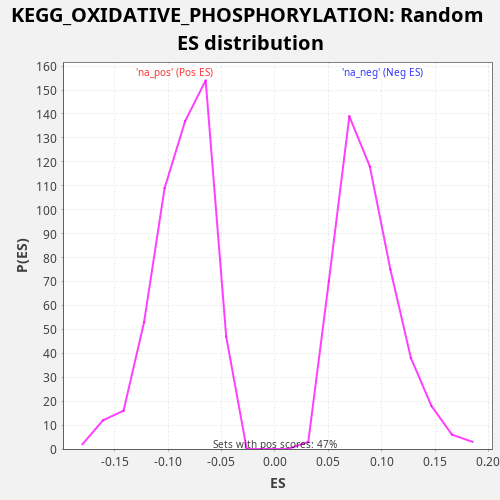

Profile of the Running ES Score & Positions of GeneSet Members on the Rank Ordered List
The same image in compressed SVG format
| Dataset | TCGA |
| Phenotype | NoPhenotypeAvailable |
| Upregulated in class | na_pos |
| GeneSet | KEGG_OXIDATIVE_PHOSPHORYLATION |
| Enrichment Score (ES) | 0.24684685 |
| Normalized Enrichment Score (NES) | 2.8362246 |
| Nominal p-value | 0.0 |
| FDR q-value | 0.0 |
| FWER p-Value | 0.0 |
| SYMBOL | RANK IN GENE LIST | RANK METRIC SCORE | RUNNING ES | CORE ENRICHMENT | |
|---|---|---|---|---|---|
| 1 | NDUFA4L2 | 22 | 16.962 | 0.0088 | Yes |
| 2 | COX7C | 417 | 3.037 | -0.0022 | Yes |
| 3 | NDUFC1 | 847 | 1.621 | -0.0151 | Yes |
| 4 | COX4I1 | 973 | 1.405 | -0.0118 | Yes |
| 5 | NDUFA10 | 1035 | 1.307 | -0.0051 | Yes |
| 6 | NDUFA7 | 1049 | 1.294 | 0.0042 | Yes |
| 7 | PPA2 | 1051 | 1.292 | 0.0142 | Yes |
| 8 | NDUFB8 | 1091 | 1.226 | 0.0221 | Yes |
| 9 | NDUFA1 | 1203 | 1.078 | 0.0262 | Yes |
| 10 | NDUFA5 | 1204 | 1.076 | 0.0362 | Yes |
| 11 | COX5A | 1245 | 1.024 | 0.0440 | Yes |
| 12 | COX15 | 1499 | 0.814 | 0.0405 | Yes |
| 13 | NDUFB10 | 1601 | 0.741 | 0.0451 | Yes |
| 14 | UQCRC2 | 1868 | 0.595 | 0.0409 | Yes |
| 15 | NDUFA2 | 2127 | 0.477 | 0.0371 | Yes |
| 16 | LHPP | 2183 | 0.457 | 0.0442 | Yes |
| 17 | ATP6V0C | 2193 | 0.453 | 0.0537 | Yes |
| 18 | NDUFB1 | 2364 | 0.398 | 0.0546 | Yes |
| 19 | COX7A2 | 2368 | 0.397 | 0.0645 | Yes |
| 20 | TCIRG1 | 2413 | 0.384 | 0.0721 | Yes |
| 21 | NDUFS4 | 2539 | 0.346 | 0.0754 | Yes |
| 22 | UQCR11 | 2636 | 0.317 | 0.0803 | Yes |
| 23 | COX5B | 2680 | 0.304 | 0.0880 | Yes |
| 24 | PPA1 | 2741 | 0.288 | 0.0948 | Yes |
| 25 | NDUFB4 | 2851 | 0.261 | 0.0990 | Yes |
| 26 | NDUFS7 | 2895 | 0.253 | 0.1067 | Yes |
| 27 | COX4I2 | 2967 | 0.242 | 0.1129 | Yes |
| 28 | NDUFB3 | 2995 | 0.236 | 0.1214 | Yes |
| 29 | NDUFA6 | 3112 | 0.215 | 0.1252 | Yes |
| 30 | COX7B | 3116 | 0.215 | 0.1351 | Yes |
| 31 | UQCRH | 3123 | 0.213 | 0.1448 | Yes |
| 32 | NDUFA3 | 3342 | 0.180 | 0.1431 | Yes |
| 33 | COX6A1 | 3445 | 0.165 | 0.1477 | Yes |
| 34 | NDUFV3 | 3646 | 0.138 | 0.1470 | Yes |
| 35 | UQCRQ | 3828 | 0.118 | 0.1473 | Yes |
| 36 | UQCRHL | 3967 | 0.105 | 0.1499 | Yes |
| 37 | NDUFS8 | 4034 | 0.099 | 0.1564 | Yes |
| 38 | UQCR10 | 4092 | 0.094 | 0.1634 | Yes |
| 39 | NDUFV2 | 4161 | 0.088 | 0.1697 | Yes |
| 40 | NDUFB2 | 4397 | 0.072 | 0.1672 | Yes |
| 41 | ATP6V1D | 4418 | 0.070 | 0.1761 | Yes |
| 42 | UQCRB | 4503 | 0.065 | 0.1816 | Yes |
| 43 | COX6B1 | 5052 | 0.035 | 0.1623 | Yes |
| 44 | NDUFS5 | 5175 | 0.030 | 0.1658 | Yes |
| 45 | NDUFS1 | 5186 | 0.030 | 0.1753 | Yes |
| 46 | NDUFA4 | 5294 | 0.027 | 0.1796 | Yes |
| 47 | SDHD | 5298 | 0.026 | 0.1894 | Yes |
| 48 | ATP6AP1 | 5492 | 0.021 | 0.1891 | Yes |
| 49 | ATP6V0E1 | 5615 | 0.018 | 0.1926 | Yes |
| 50 | UQCRC1 | 5627 | 0.017 | 0.2020 | Yes |
| 51 | COX10 | 5756 | 0.015 | 0.2052 | Yes |
| 52 | NDUFS3 | 5812 | 0.013 | 0.2122 | Yes |
| 53 | NDUFB7 | 5876 | 0.012 | 0.2189 | Yes |
| 54 | ATP6V1G1 | 6244 | 0.007 | 0.2092 | Yes |
| 55 | COX11 | 6314 | 0.006 | 0.2156 | Yes |
| 56 | COX8A | 6436 | 0.005 | 0.2191 | Yes |
| 57 | ATP6V1H | 6515 | 0.004 | 0.2249 | Yes |
| 58 | NDUFA11 | 6555 | 0.003 | 0.2328 | Yes |
| 59 | ATP6V1F | 6954 | 0.001 | 0.2216 | Yes |
| 60 | SDHB | 7095 | 0.000 | 0.2241 | Yes |
| 61 | NDUFC2 | 7618 | -0.000 | 0.2062 | Yes |
| 62 | NDUFB5 | 7741 | -0.000 | 0.2097 | Yes |
| 63 | NDUFAB1 | 7923 | -0.001 | 0.2100 | Yes |
| 64 | ATP6V1E1 | 8226 | -0.003 | 0.2039 | Yes |
| 65 | COX6C | 8337 | -0.004 | 0.2080 | Yes |
| 66 | CYC1 | 8340 | -0.004 | 0.2179 | Yes |
| 67 | NDUFB9 | 8569 | -0.007 | 0.2157 | Yes |
| 68 | ATP6V0E2 | 8996 | -0.013 | 0.2030 | Yes |
| 69 | ATP6V1A | 9191 | -0.017 | 0.2026 | Yes |
| 70 | NDUFA9 | 9240 | -0.018 | 0.2100 | Yes |
| 71 | COX17 | 9270 | -0.018 | 0.2185 | Yes |
| 72 | NDUFV1 | 9300 | -0.019 | 0.2269 | Yes |
| 73 | SDHC | 9363 | -0.021 | 0.2336 | Yes |
| 74 | NDUFB6 | 9517 | -0.024 | 0.2355 | Yes |
| 75 | SDHA | 10264 | -0.050 | 0.2056 | Yes |
| 76 | NDUFA8 | 10344 | -0.053 | 0.2114 | Yes |
| 77 | NDUFS2 | 10559 | -0.065 | 0.2100 | Yes |
| 78 | COX7B2 | 10595 | -0.067 | 0.2181 | Yes |
| 79 | ATP6V0A4 | 10751 | -0.075 | 0.2198 | Yes |
| 80 | ATP6V1B2 | 10827 | -0.080 | 0.2258 | Yes |
| 81 | ATP6V1E2 | 10996 | -0.091 | 0.2268 | Yes |
| 82 | ATP6V0D1 | 11035 | -0.093 | 0.2348 | Yes |
| 83 | COX6B2 | 11282 | -0.110 | 0.2316 | Yes |
| 84 | ATP4B | 11422 | -0.121 | 0.2342 | Yes |
| 85 | COX6A2 | 11545 | -0.132 | 0.2377 | Yes |
| 86 | UQCRFS1 | 11562 | -0.134 | 0.2468 | Yes |
| 87 | NDUFS6 | 12127 | -0.197 | 0.2267 | No |
| 88 | ATP6V0A1 | 12317 | -0.222 | 0.2266 | No |
| 89 | ATP6V1G2 | 12670 | -0.282 | 0.2178 | No |
| 90 | ATP6V0A2 | 12804 | -0.308 | 0.2207 | No |
| 91 | COX7A2L | 12862 | -0.317 | 0.2277 | No |
| 92 | ATP6V0B | 13237 | -0.400 | 0.2177 | No |
| 93 | ATP6V1C1 | 13553 | -0.480 | 0.2109 | No |
| 94 | ATP4A | 14134 | -0.688 | 0.1899 | No |
| 95 | COX7A1 | 14510 | -0.880 | 0.1798 | No |
| 96 | ATP6V1C2 | 16014 | -2.264 | 0.1095 | No |
| 97 | ATP6V1B1 | 16493 | -3.120 | 0.0940 | No |
| 98 | COX8C | 17313 | -5.504 | 0.0602 | No |
| 99 | ATP12A | 18386 | -13.604 | 0.0130 | No |
| 100 | ATP6V0D2 | 18489 | -15.379 | 0.0175 | No |

{kind=link}
{kind=link}